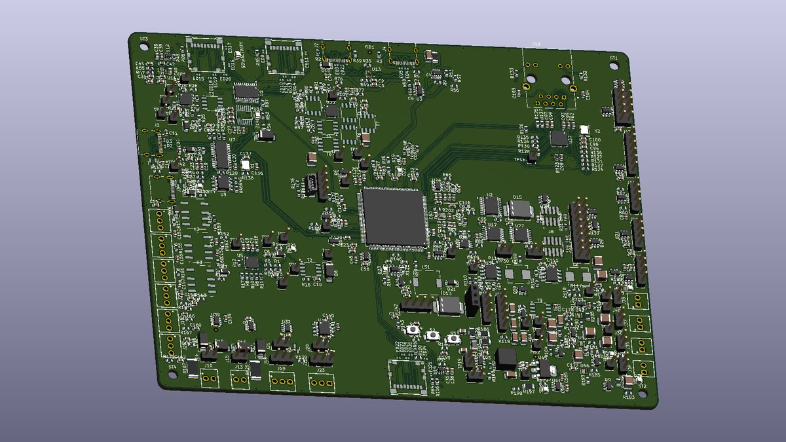
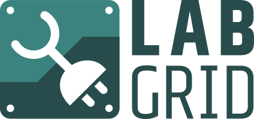

Give your AI agent hands on the bench.
PhysIO is a USB hub-instrument that lets an AI coding agent flash, power, probe and debug real embedded hardware by itself — closing the build → flash → boot → measure loop without a person stepping in for every physical action.

THE BOTTLENECK
Agents stop at the edge of the board.
AI agents already write firmware, build images and read datasheets. Then they hit the physical boundary: “flash this and tell me what the console says.” Every flash, power cycle, voltage check and log capture puts a person back in the loop.
A typical debug session needs dozens of these hand-offs. PhysIO removes them, so the agent can run the whole cycle — and repeat it overnight.
HOW IT WORKS
tools
SCPI
PhysIO appears as a standard USB serial device, so there is nothing to install. Commands are short, readable SCPI lines: the same interface serves an agent, a test script or an engineer at a terminal.
physio-mcp turns each capability into an MCP tool and forwards hub events — a button press, a fault — as notifications. physio-labgrid brings the same hub into labgrid for deterministic CI. One host can drive several hubs.
# who is on the other end? *IDN? OK Rufilla,PhysIO,SN…,FW0.1.0 # switch relay 1, set the console baud :RELAY1:STAT ON OK :UART2:BAUD 115200 OK # drive a DAC, read the result back :DAC1:VOLT 1650 OK :ADC1:READ? OK 1648
WHAT IT DOES
one board instead of a drawer of single-purpose toolsFlash without hands
The host writes an image to the on-board microSD through a USB High-Speed card reader; a mux then hands the card to the target to boot. Cortex-M parts flash over the built-in SWD probe.
Power under control
Four target rails — 1.8, 3.3, 5 and 9 V — each switched and eFuse-protected, plus switched USB power. Three current monitors catch hangs, boot loops and consumption regressions.
Every bus, every voltage
Two UARTs, SPI, I²C, GPIO, CAN-FD and RS-485, level-shifted to the target's own I/O voltage from 1.6 to 5.5 V — and held safe until that voltage is confirmed.
Built-in debug probe
An integrated SWD probe works with OpenOCD, probe-rs and pyOCD. A standard 10-pin Cortex Debug header takes your own probe when you want it.
Measure and stimulate
ADC inputs to check rails and signals, DAC outputs that generate sine, ramp and square waves, and three relays for switching whatever else the test needs.
USB passthrough
USB 2.0 High-Speed passthrough from host to target, with switched and current-limited VBUS so a USB-powered target can be power-cycled too.
WORKS WITH
PhysIO fits into the tools embedded teams already use — as an agent's hands, or as one box in a CI rig.

labgrid compatible
physio-labgrid provides resources and drivers for power, reset, console and SWD, so an existing labgrid environment can use a PhysIO hub with no project-side glue.
AI agents
physio-mcp exposes the hub as Model Context Protocol tools for Claude and other MCP clients, with hub events delivered as notifications.
Debug tooling
The integrated probe speaks CMSIS-DAP to OpenOCD, probe-rs and pyOCD — the flash and debug workflow you already have.
SPECIFICATIONS
v1 design — subject to change| CONTROLLER | |
|---|---|
| Processor | STM32H723, Arm Cortex-M7 at 550 MHz |
| Firmware | Zephyr RTOS, with Rust application code |
| Host link | USB-C: USB serial (CDC) and CMSIS-DAP; optional 10/100 Ethernet |
| POWER | |
| Input | USB Power Delivery from the host cable or a dedicated PD input, selected automatically |
| Target rails | 1.8 V; 3.3 V at 2.48 A; 5 V at 2.04 A; 9 V at 1.37 A (needs a 12 V PD source). Each rail switched and eFuse-protected |
| Monitoring | 3× INA219: USB passthrough and two user-wired channels |
| TARGET INTERFACES | |
| Buses | 2× UART, SPI, I²C and 8-bit GPIO; CAN-FD to 5 Mb/s; RS-485 (Modbus RTU) |
| I/O levels | 1.6 to 5.5 V, referenced to the target's VREF; tri-stated until it is valid |
| Debug | Integrated SWD probe; 10-pin Cortex Debug header |
| USB | USB 2.0 High-Speed passthrough with switched, current-limited VBUS |
| STORAGE & I/O | |
| microSD | Shared card with USB High-Speed reader and two-way mux to the target; separate card for soak logs |
| Analogue | 16-bit ADC inputs; 2× 12-bit DAC with sine, ramp and square generation |
| Bench | 3 relays, OLED status display, three buttons, buzzer, Qwiic expansion |
| HOST SOFTWARE | |
| Protocol | SCPI text commands over USB serial; no drivers |
| Integrations | physio-mcp (MCP server for AI agents); physio-labgrid (labgrid resources and drivers) |
STATUS
Firmware and the MCP server are bench-validated on the STM32H723; the v1 PCB is in layout.
Hardware under CERN-OHL-W-2.0; firmware and host tools under Apache-2.0 or MIT.
A development tool for small embedded teams and AI-assisted workflows — not a production tester or a board farm. Low-voltage targets only; not CE, UKCA or FCC certified.
The v1 board is in layout now.
Next up: first boards back from assembly and bring-up on real targets. Follow along for build notes and updates as PhysIO comes together.